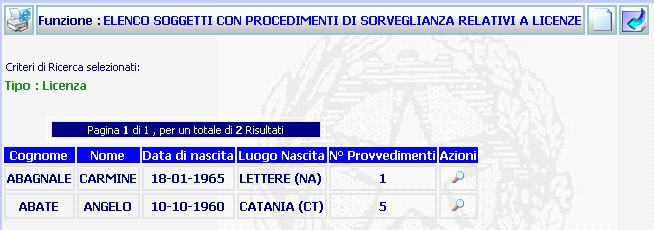

ELENCO SOGGETTI CON PROCEDIMENTI DI SORVEGLIANZA RELATIVI A LICENZE: La funzione consente di visualizzare l'elenco dei soggetti nei cui confronti risultino emessi dei provvedimenti relativi a licenze.
LE MASCHERE VIDEO
La funzione viene realizzata attraverso la maschera seguente, in essa compare l'elenco dei soggetti con il numero di provvedimenti relativi a licenze, se nella maschera precedente di ricerca fosse stata selezionata anche la casella di spunta per la ricerca delle licenze rigettate, il sistema avrebbe visualizzato l'elenco comprensivo dei provvedimenti di rigetto.

COME FARE PER ...
| Per visualizzare
nel dettaglio
l'elenco
licenze per soggetto, occorre agire sul pulsante
|
si aprirà la maschera di che permette di visualizzare sia il numero dei procedimenti sius a carico di un soggetto sia il dettaglio dei provvedimenti emessi.
| Per visualizzare, se presente, un'altra pagina occorre:
|

CAMPI
La maschera non presenta campi da compilare, ma visualizza semplicemente l'elenco dei soggetti con il numero dei provvedimenti emessi relativi a licenze.
PULSANTI
Oltre al pulsante
 di stampa del contesto (videata)
di stampa del contesto (videata)
|
PULSANTE |
DESCRIZIONE |
|
|
Questo pulsante ha lo scopo di creare una nuova maschera e consentire di inserire nuovi dati. |
|
|
Questo pulsante ha lo scopo di consentire di tornare, visualizzandola, alla maschera precedente a quella attuale. |
|
|
Questo pulsante ha lo scopo di visualizzare, nel dettaglio, l'elenco licenze per soggetto |